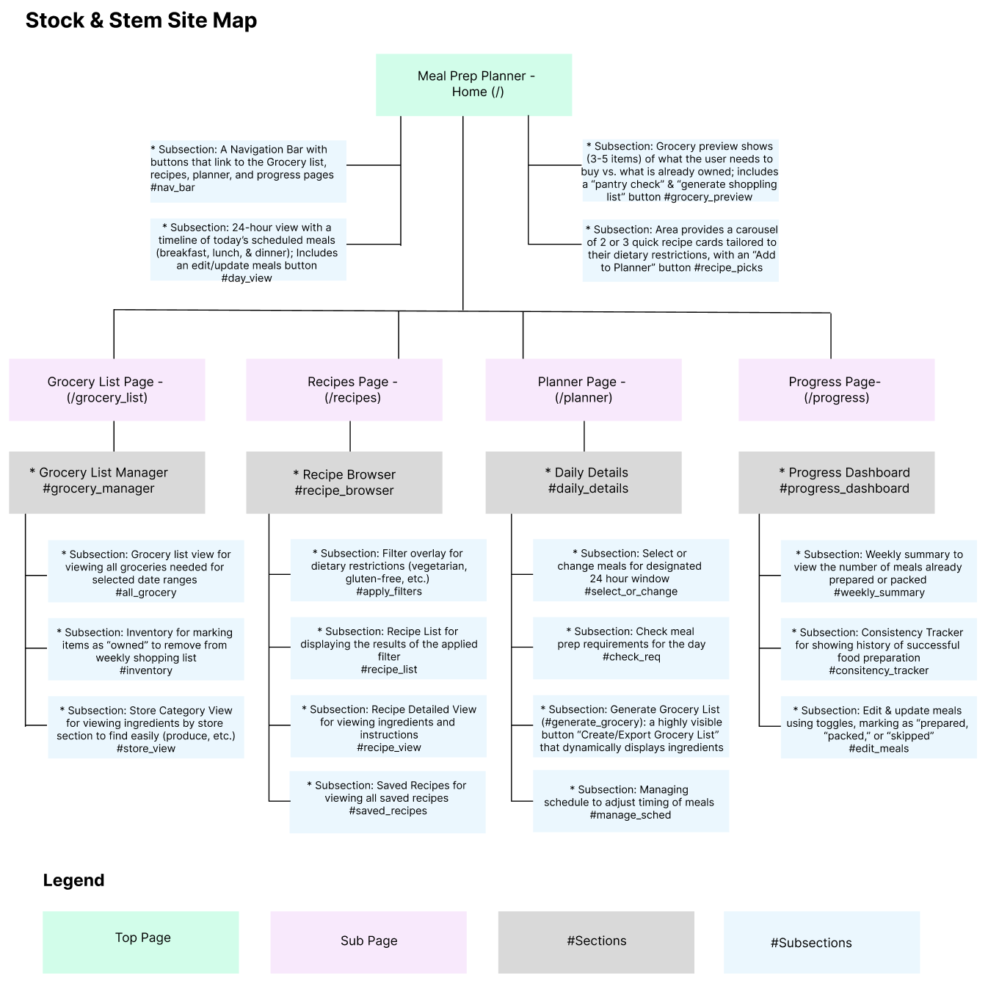
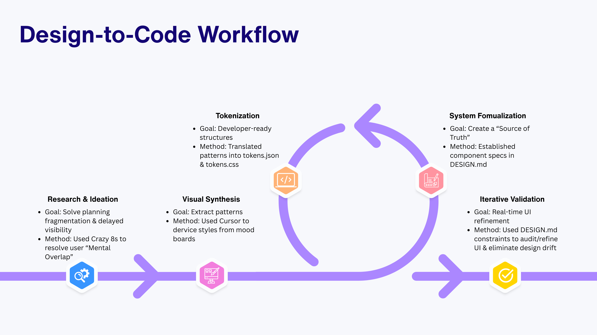

Stock & Stem
Thoughtfully planned. Perfectly plated.
Stock & Stem was built to explore what a dedicated meal planning and pantry tool looks like when it prioritizes user focus: fast to scan, accurate about what you have on hand, and structurally aligned with how people actually move through their week.

Challenge
Anyone who manages cooking for a busy household knows it is a delicate balance to juggle tight schedules and budgets. A weeknight stir-fry, a meal-prep Sunday, and a last-minute dinner guest all compete for the same bag of spinach. Existing tools tend to be disparate, with many users relying on bookmarked recipes, hand-written notes, and a quick glance at an ever-changing inventory. Furthermore, monitoring perishable groceries introduces a layer of micro-logistics that generic to-do apps ignore. Ingredients expire on different schedules, partial packages get opened mid-week, and fridge space is finite.
When building the application, I targeted three core friction points in the typical home cooking workflow:
- Planning Fragmentation: Recipes live in bookmarks, grocery lists live in notes apps, and real-time pantry inventory is constantly changing.
- Delayed Visibility: Discovering a missing ingredient usually happens when the pan is already hot.
- Mental Overlap: The app needs to bridge two distinct mental models: selecting recipes (inspiration) and managing inventory (logistics).
The goal was to design a front-end interface that minimizes data-entry friction for someone interacting with a screen with intermittent attention.
Process
Establishing the web appliation structure & basic elements
Before beginning the design process, I created a basic structure for the web application using Figma. This included establishing the main pages of the application and relevant sub-sections.
Figure 1. Application site map

Developing Key Userflows
The key userflows focused on the core functionality of the app including assigning and retrieving recipes for meals, generating grocery lists, updating inventory, and tracking the progress of meal preparation.
Swipe or drag to browse
Figure 2. Examples of User Flows
Sketching
I used Crazy 8s as a low-stakes way to explore design ideas for the website's four main pages and to identify key user flows.
Swipe or drag to browse
Figure 3. Examples of Sketches


Visual Style Development
Figure 4. Design-to-Code Workflow

To create human-centered digital solutions while reducing cognitive load and decision fatigue, I implemented an AI-assisted design-to-code workflow.
- Visual Synthesis: I uploaded my mood board to Cursor and prompted the agent to extract reusable visual patterns. Instead of looking at each image separately, I asked Cursor to identify tendencies in color palette, typography style, spacing density, layout structure, etc.
- Source of Truth: I formalized these patterns into a DESIGN.md file, establishing a central repository for components (buttons, inputs, cards, and modals) and accessibility rules.
- Tokenization: I translated the design system into tokens.json and tokens.css files, creating a developer-ready structure that enforced strict adherence to the visual language.
- Iterative Validation: By using my DESIGN.md as a constraint for generating test pages, I was able to rapidly audit and refine the UI, eliminating design drift in real-time.
Figure 5. Mood Board

Design Iterations
To make Stock & Stem into a more intuitive experience, I focused on refining the information architecture and streamlining user interactions based on usability. This included the following modifications:
- Consolidated Planning: I integrated redundant subsections (like #select_or_change and #manage_sched) into a single, cohesive calendar-based view, significantly reducing the need for scrolling.
- Quick-Tagged Inventory: I transitioned the inventory list to a tabbed interface, allowing users to scan their pantry more efficiently than in the original checklist format.
- Actionable Grocery Management: I implemented a category-sorted, accordion-style grocery list that lets users strike items as "owned," which automatically updates their shopping list.
- Enhanced Visual Cues: I introduced consistent iconography (e.g., chef hats for recipes, pencils for scheduling) and refined the layout into responsive two-column grids, making the UI more scannable and accessible on smaller screens.
- Categorized Store View: I utilized an intuitive card-based system to organize grocery items into distinct categories (e.g., Produce, Dairy, Meat & Seafood), allowing users to easily navigate their shopping list section by section.
AI-Assisted Development: Backend & Data Integration
Beyond just designing the interface, I used AI to build the app's full functionality and data structure. This includes using Cursor to accomplish the following tasks:
- Integrating Unsplash APIs: I centralized image management by creating a custom <RecipeImage/> component. This component dynamically fetches high-quality visuals from the Unsplash API based on the recipe name, replacing static placeholders with recipe photographs.
- Authentication & Data Security: I implemented protected routing, requiring users to authenticate with Supabase before accessing a dedicated 'Welcome' landing page.
- Intelligent Data Initialization: I integrated the Supabase schema to ensure new users are initialized with clean, empty states rather than hardcoded placeholder data. This design provides a more welcoming "first-run" experience, ensuring that the app triggers a "Get Started" prompt when the user's recipe library is empty.
- Unified Data Flow: By mapping recipe data to API-driven components, I ensured the app remained dynamic and responsive, automatically handling image loading states and fallbacks when API requests failed.
- User-Created Content: I designed the recipe entry flow to mirror the structure of standard recipes by placing the quantity before the ingredient, making manual content entry more intuitive and efficient for users.
Swipe or drag to browse
Figure 6. Examples of AI Assistance During the Build Process
Solution
Key features
- Accessible & Resilient Interface — Designed for use in varied environments, the app features a responsive layout that maintains readability on both desktop and mobile devices. The UI intelligently handles data gaps with graceful loading states and fallbacks, ensuring the experience remains polished and "cozy" regardless of connection quality or content availability.
Figure 7. Sample screens included from Stock & Stem

- Centralized calendar dashboard — A unified, day-by-day planner that handles meal assignment, schedule adjustments, and grocery generation from a single, cohesive view, eliminating the need to jump between disconnected screens.
Figure 8. Consolidated planner page

- Quick-tag pantry inventory — An inventory system pre-populated with common pantry staples. Users can effortlessly tag items they already own to instantly update their inventory.
- Interactive grocery checklists — High-utility, actionable shopping lists featuring intuitive toggle interactions that let users cleanly strike items off as they shop or audit their kitchen.
Figure 9. Quick tag inventory system and grocery checklist

- Smart meal-time allocation — Dedicated, clean layout blocks for Breakfast, Lunch, Dinner, and Snacks that display precise timing and meal states, ensuring the entire day is glanceable in under three seconds.
Deployment
By applying Human-Computer Interaction (HCI) principles to reactive state management, Stock & Stem successfully translates complex kitchen logistical challengess into a zero-friction front-end interface. Consolidating the daily planning workflows into a single calendar view significantly reduced task fragmentation.
The live, responsive application achieves a glanceable hierarchy, allowing meal planners to successfully manage their schedule, track meal prep progress, and audit inventory with intermittent attention.
Reflection
One of the most enjoyable aspects of developing this app was finding ways to reduce cognitive load while also offering users actionable motivation. Features like the weekly summary and consistency trackers were particularly effective in this regard. Additionally, consolidating the daily details taught me the value of aggressive layout simplification. In early site maps, I separated features into distinct sub-sections, but true user context demanded everything live on a single calendar. Moving forward, I plan to delve deeper into gamifying these tools to enhance user engagement. I also want to explore ways to streamline the onboarding experience, such as a browser-based tool that allows users to search for recipes online and pull them directly into their app library. Finally, I would like to explore shared household views that allow partners to share shopping lists and manage inventory together.